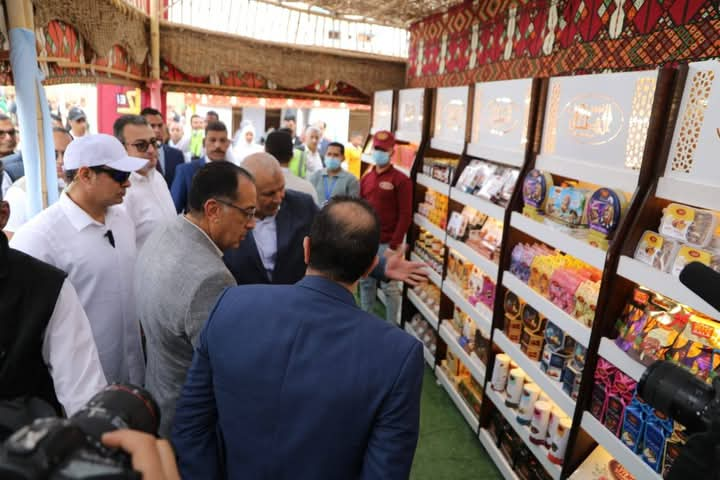
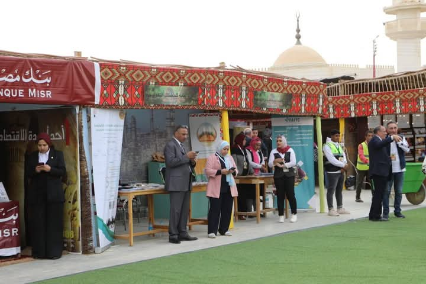

معرض الوادي الجديد الزراعي - EGY AGRI في إطار سعي محافظة الوادي الجديد لتعزيز الاقتصاد المحلي ودعم القطاع الزراعي، تم تنظيم "معرض الوادي الجديد الزراعي - EGY AGRI"، والذي عقد في الفترة من 21 إلى 22 نوفمبر بأرض المعارض في حي الأمل بمدينة الخارجة، تحت رعاية السيد رئيس الجمهورية وبالتعاون مع وزارتي الزراعة والصناعة. فعاليات المعرض: شهد المعرض هذا العام مشاركة واسعة من العارضين المحليين والدوليين، حيث تم عرض مجموعة متنوعة من المنتجات الزراعية التي تعكس تنوع طبيعة المحافظة. شملت المعروضات: التمور: التي تشتهر بها الوادي الجديد وتعد من أهم المنتجات الزراعية التي تسهم في دعم الاقتصاد المحلي. النباتات الطبية والعطرية: التي تمثل جزءاً من التراث الزراعي المستدام. الأسمدة: لتعزيز الإنتاج الزراعي المحلي. منتجات مخلفات النخيل: التي يتم تصنيعها وتحويلها إلى منتجات جديدة ذات قيمة اقتصادية. المنتجات اليدوية: التي تصنع يدوياً من مكونات محلية، وتعتبر أحد روافد الثقافة التراثية. أهداف المعرض: ركز المعرض على فتح أسواق جديدة للمنتجات الزراعية المحلية، وكذلك تعزيز قدرة الشركات الناشئة والصغيرة والمتوسطة في القطاعات الزراعية والتصنيع. كما تم عرض الابتكارات في مجال الزراعة المستدامة والإنتاج الغذائي، بالإضافة إلى التشجيع على استخدام الطاقة المتجددة في الزراعة. دور المعرض في المحافظة: أكدت السيدة حنان مجدي، نائب محافظ الوادي الجديد، خلال جولتها في المعرض، على أهمية المعرض في تحقيق الرواج الاقتصادي للمحافظة وتنمية القطاع الزراعي من خلال دعم الفلاحين المحليين وتوفير فرص العمل، مشيرة إلى أن المعرض يعد منصة مثالية لعرض منتجات المحافظة وتعريف الزوار والمستثمرين بما يمكن أن تقدمه الوادي الجديد من منتجات زراعية وصناعية مبتكرة.
 .jpeg)